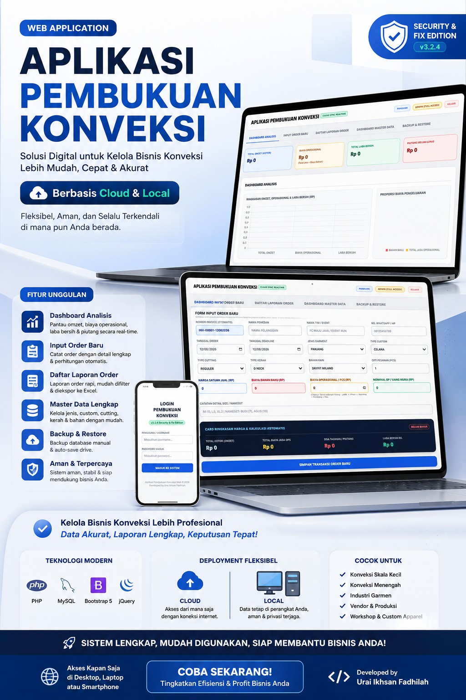
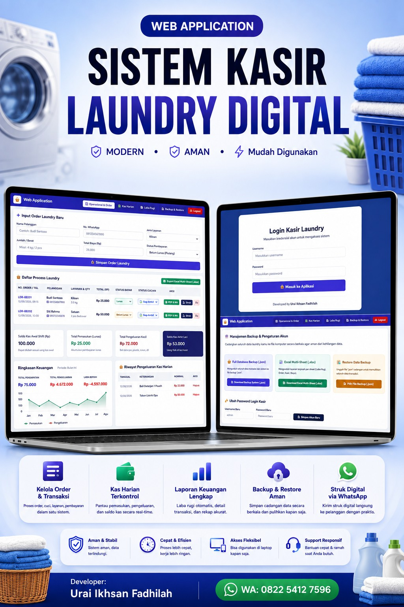
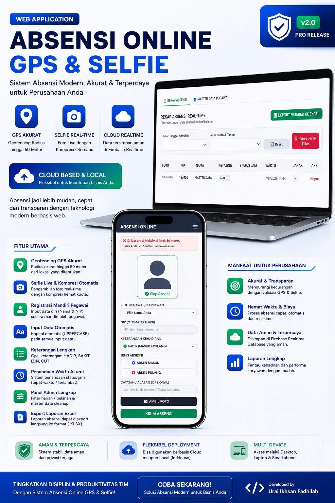
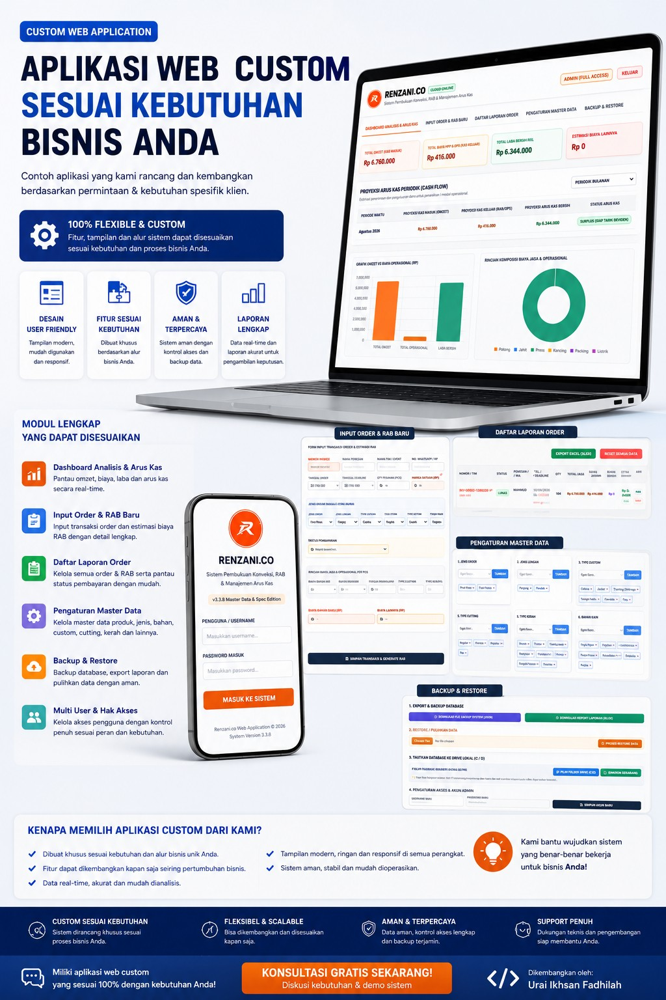
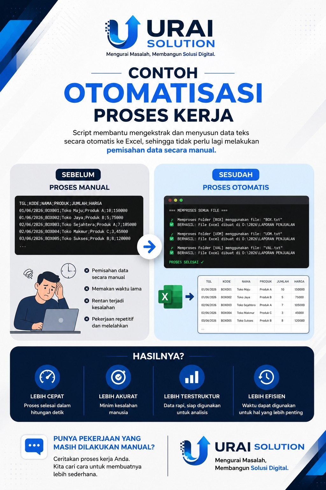

Operasional & Administrasi
Tata kelola administrasi cabang, pengendalian biaya operasional, verifikasi dokumen, dan pengelolaan proses pendukung.
Profesional operasional & administrasi cabang dengan pengalaman lebih dari 16 tahun, dipadukan dengan kemampuan analisis data, digitalisasi proses, dan pengembangan proyek web independen.

Berangkat dari pengalaman lapangan, saya terbiasa mengurai proses kerja, membaca data, dan mencari cara yang lebih sederhana untuk menyelesaikan pekerjaan.
“Memahami masalah secara nyata sebelum membangun solusi yang tepat.”
Profesional dengan latar belakang Manajemen Informatika dan pengalaman di industri FMCG, dealer alat berat, serta perusahaan pembiayaan. Fokus pada tata kelola administrasi cabang, pengolahan data sales, monitoring KPI, pelaporan, dan perbaikan proses kerja.
Kompetensi yang terbentuk dari pengalaman kerja nyata dan pengembangan proyek digital secara mandiri.
Tata kelola administrasi cabang, pengendalian biaya operasional, verifikasi dokumen, dan pengelolaan proses pendukung.
Pengolahan data performa penjualan, penyusunan laporan, analisis tren, dan penyajian informasi untuk kebutuhan manajemen.
Monitoring KPI, khususnya KPI sales, serta membantu memastikan data dan laporan performa tersaji secara terstruktur.
Menyederhanakan alur kerja manual melalui otomatisasi, dashboard, pengelolaan data, dan aplikasi web.
Tiga fase pengalaman yang membentuk perpaduan antara operasional, analisis, dan perspektif teknologi.
Perusahaan Pembiayaan (Finance)
Dealer Alat Berat
FMCG (Fast Moving Consumer Goods)
Karya digital yang saya rancang dan kembangkan secara independen untuk mempelajari dan menerapkan solusi teknologi pada kebutuhan bisnis.

Web application untuk membantu pengelolaan proses bisnis konveksi melalui dashboard analisis, input order, perhitungan biaya, master data, laporan, serta backup dan restore.
Lihat visual project →
Aplikasi untuk membantu pengelolaan order laundry, transaksi, kas harian, laporan keuangan, backup data, dan akses kasir melalui perangkat yang fleksibel.
Lihat visual project →
Sistem absensi berbasis web dengan validasi lokasi, selfie, pencatatan waktu, panel administrasi, pengelolaan data pegawai, dan export laporan.
Lihat visual project →
Eksplorasi perancangan aplikasi web berdasarkan kebutuhan proses bisnis tertentu, dengan fokus pada alur yang dapat disesuaikan dan tampilan yang mudah digunakan.
Lihat visual project →
Contoh pendekatan otomatisasi untuk mengubah pekerjaan pemisahan dan penyusunan data yang sebelumnya dilakukan manual menjadi proses yang lebih cepat, terstruktur, dan konsisten.
Lihat visual project →Platform edukasi digital yang dikembangkan untuk berbagi insight dunia kerja, sales, leadership, produktivitas, dan pembelajaran dari lapangan.

Korporatpedia menjadi ruang untuk menyusun dan membagikan pengetahuan praktis tentang dunia kerja dan FMCG. Konten dikembangkan secara mandiri melalui carousel, reels, toolkit, dan materi edukasi.
Kunjungi Instagram →Universitas Bina Sarana Informatika (UBSI), Pontianak — Kalimantan Barat